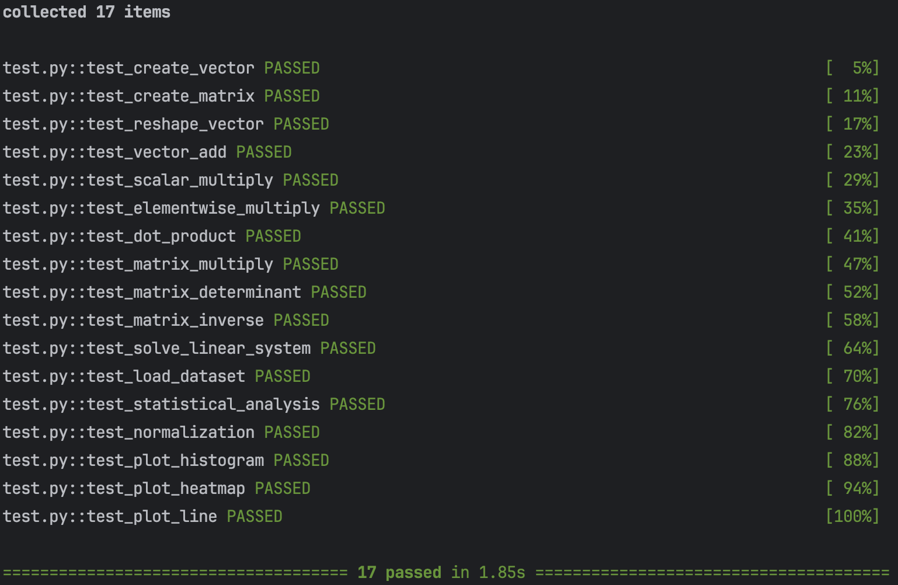
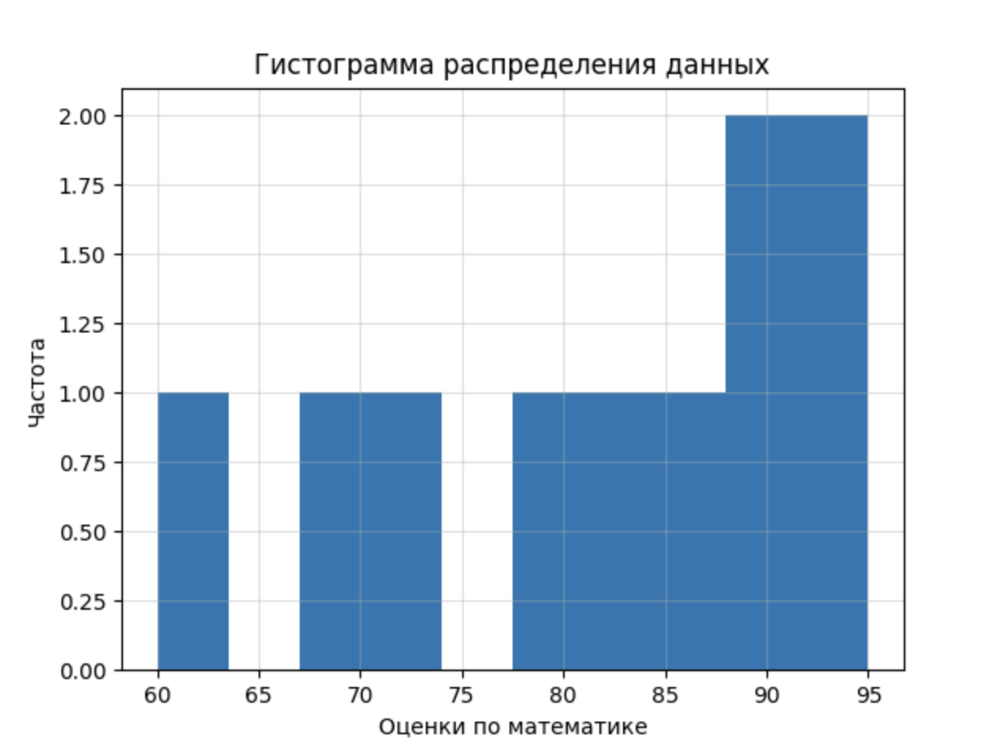
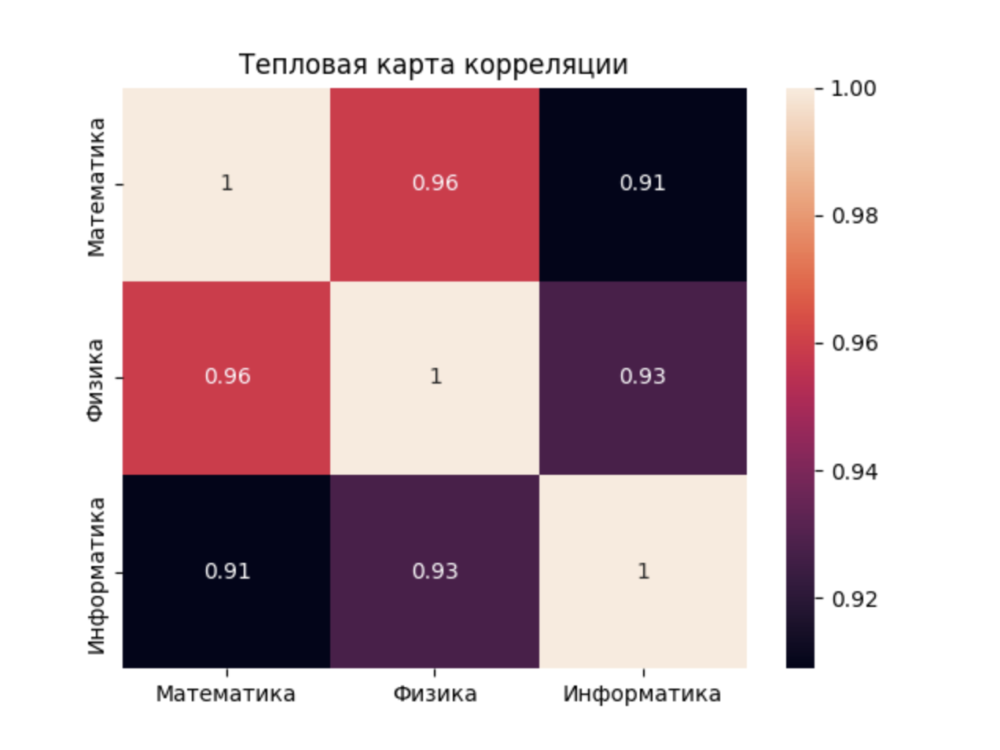

Описание задания
Массивы, векторные и матричные операции в NumPy. Визуализация с Matplotlib и Seaborn
Цели работы
- Освоить основные операции для работы с
NumPy - Освоить основные операции для работы с
MatplotlibиSeaborn
Ход выполнения
Задание 1: Создание и обработка массивов
def create_vector() -> np.ndarray:
"""
Создает массив типа numpy.ndarray целых чисел в промежутке [0, 10)
"""
return np.arange(10)
def create_matrix() -> np.ndarray:
"""
Создает матрицу 5x5 со случайными числами, заполненную выборками из распределения U[0, 1)
"""
return np.random.rand(5, 5)
def reshape_vector(vec: np.ndarray) -> np.ndarray:
"""
Преобразует размерность массива в формате (10,) -> (2, 5)
"""
return vec.reshape(2, 5)
def transpose_matrix(mat: np.ndarray) -> np.ndarray:
"""
Транспонирует матрицу
"""
return mat.T
Задание 2: Векторные операции
def vector_add(a: np.ndarray, b: np.ndarray) -> np.ndarray:
"""
Выполняет поэлементное сложение
"""
return a + b
def scalar_multiply(vec: np.ndarray, scalar: int | float) -> np.ndarray:
"""
Выполняет умножение вектора на скаляр
"""
return vec * scalar
def elementwise_multiply(a: np.ndarray, b: np.ndarray) -> np.ndarray:
"""
Выполняет произведение Адамара
"""
return a * b
def dot_product(a: np.ndarray, b: np.ndarray) -> float:
"""
Вычисляет скалярное произведение
"""
return a.dot(b)
Задание 3: Матричные операции
def matrix_multiply(a: np.ndarray, b: np.ndarray) -> np.ndarray:
"""
Выполняет умножение матриц
"""
return a @ b
def matrix_determinant(a: np.ndarray) -> float:
"""
Вычисляет определитель матрицы
"""
return np.linalg.det(a)
def matrix_inverse(a: np.ndarray) -> np.ndarray:
"""
Вычисляет обратную матрицу
"""
return np.linalg.inv(a)
def solve_linear_system(A: np.ndarray, b: np.ndarray) -> np.ndarray:
"""
Решает систему Ax = b
"""
return np.linalg.solve(A, b)
Задание 4: Статистический анализ
def load_dataset(path="data/students_scores.csv") -> np.ndarray:
"""
Загружает данные из .csv файла в массив
"""
return pd.read_csv(path).to_numpy()
def statistical_analysis(data: np.ndarray) -> dict:
"""
Для данных вычисляет:
- среднее значение
- медиану
- стандартное отклонение
- минимум
- максимум
- 25 и 75 перцентили
"""
return {'mean': np.mean(data), 'median': np.median(data), 'std': np.std(data),
'min': np.min(data), 'max': np.max(data),
'first quartile': np.percentile(data, 25), 'third quartile': np.percentile(data, 75)}
def normalize_data(data: np.ndarray) -> np.ndarray:
"""
Выполняет min-max нормализацию массива
"""
d_min, d_max = data.min(), data.max()
return (data - d_min) / (d_max - d_min)
Задание 5: Визуализация
def plot_histogram(data: np.ndarray, xlabel='Значения', ylabel='Частота') -> None:
"""
Строит гистограмму распределения данных
Результат сохраняется в папку plots
"""
os.makedirs('plots', exist_ok=True)
plt.hist(data, bins=10)
plt.grid(alpha=0.4)
plt.title('Гистограмма распределения данных')
plt.xlabel(xlabel)
plt.ylabel(ylabel)
plt.savefig('plots/histogram.png')
plt.close()
def plot_heatmap(matrix: np.ndarray, xticklabels=None, yticklabels=None) -> None:
"""
Строит тепловую карту корреляции
Результат сохраняется в папку plots
"""
os.makedirs('plots', exist_ok=True)
sns.heatmap(
matrix,
annot=True,
xticklabels=xticklabels or range(len(matrix)),
yticklabels=yticklabels or range(len(matrix[0]))
)
plt.title('Тепловая карта корреляции')
plt.savefig('plots/heatmap.png')
plt.close()
def plot_line(x: np.ndarray, y: np.ndarray, xlabel='Признак', ylabel='Таргет') -> None:
"""
Строит график зависимости таргета от признака
Результат сохраняется в папку plots
"""
os.makedirs('plots', exist_ok=True)
plt.plot(x, y, marker='o')
plt.grid(alpha=0.4)
plt.title('График зависимости')
plt.xlabel(xlabel)
plt.ylabel(ylabel)
plt.savefig('plots/line_plot.png')
plt.close()
Тестирование
Тесты
from main import *
def test_create_vector():
v = create_vector()
assert isinstance(v, np.ndarray)
assert v.shape == (10,)
assert np.array_equal(v, np.arange(10))
def test_create_matrix():
m = create_matrix()
assert isinstance(m, np.ndarray)
assert m.shape == (5, 5)
assert np.all((m >= 0) & (m < 1))
def test_reshape_vector():
v = np.arange(10)
reshaped = reshape_vector(v)
assert reshaped.shape == (2, 5)
assert reshaped[0, 0] == 0
assert reshaped[1, 4] == 9
def test_vector_add():
assert np.array_equal(
vector_add(np.array([1, 2, 3]), np.array([4, 5, 6])),
np.array([5, 7, 9])
)
assert np.array_equal(
vector_add(np.array([0, 1]), np.array([1, 1])),
np.array([1, 2])
)
def test_scalar_multiply():
assert np.array_equal(
scalar_multiply(np.array([1, 2, 3]), 2),
np.array([2, 4, 6])
)
def test_elementwise_multiply():
assert np.array_equal(
elementwise_multiply(np.array([1, 2, 3]), np.array([4, 5, 6])),
np.array([4, 10, 18])
)
def test_dot_product():
assert dot_product(np.array([1, 2, 3]), np.array([4, 5, 6])) == 32
assert dot_product(np.array([2, 0]), np.array([3, 5])) == 6
def test_matrix_multiply():
A = np.array([[1, 2], [3, 4]])
B = np.array([[2, 0], [1, 2]])
assert np.array_equal(matrix_multiply(A, B), A @ B)
def test_matrix_determinant():
A = np.array([[1, 2], [3, 4]])
assert round(matrix_determinant(A), 5) == -2.0
def test_matrix_inverse():
A = np.array([[1, 2], [3, 4]])
invA = matrix_inverse(A)
assert np.allclose(A @ invA, np.eye(2))
def test_solve_linear_system():
A = np.array([[2, 1], [1, 3]])
b = np.array([1, 2])
x = solve_linear_system(A, b)
assert np.allclose(A @ x, b)
def test_load_dataset():
test_data = "math,physics,informatics\n78,81,90\n85,89,88"
with open("test_data.csv", "w") as f:
f.write(test_data)
try:
data = load_dataset("test_data.csv")
assert data.shape == (2, 3)
assert np.array_equal(data[0], [78, 81, 90])
finally:
os.remove("test_data.csv")
def test_statistical_analysis():
data = np.array([10, 20, 30])
result = statistical_analysis(data)
assert result["mean"] == 20
assert result["min"] == 10
assert result["max"] == 30
def test_normalization():
data = np.array([0, 5, 10])
norm = normalize_data(data)
assert np.allclose(norm, np.array([0, 0.5, 1]))
def test_plot_histogram():
data = np.array([1, 2, 3, 4, 5])
plot_histogram(data)
def test_plot_heatmap():
matrix = np.array([[1, 0.5], [0.5, 1]])
plot_heatmap(matrix)
def test_plot_line():
x = np.array([1, 2, 3])
y = np.array([4, 5, 6])
plot_line(x, y)
Результат

Визуализация на примере датасета
Датасет
math,physics,informatics
78,81,90
85,89,88
92,94,95
70,75,72
88,84,91
95,99,98
60,65,70
73,70,68
84,86,85
90,93,92
Код
df = pd.read_csv('data/students_scores.csv')
students = np.arange(1, len(df) + 1)
math_scores = df['math'].values
scores_corr_matrix = df.corr().values
plot_histogram(math_scores, xlabel='Оценки по математике')
plot_heatmap(
scores_corr_matrix,
xticklabels=['Математика', 'Физика', 'Информатика'],
yticklabels=['Математика', 'Физика', 'Информатика']
)
plot_line(students, math_scores, xlabel='Номер студента', ylabel='Оценка по математике')
Результат (histogram)

Результат (heatmap)

Результат (line plot)

Выводы
В ходе проделанной работы я вспомнил базовые синтаксис и конструкции библиотек NumPy, Matplotlib, Seaborn, а также более подробно разобрал, за что отвечают те или иные параметры соответствующих функций, что позволит мне более качественно работать с вышеперечисленными библиотеками в области анализа и обработки данных